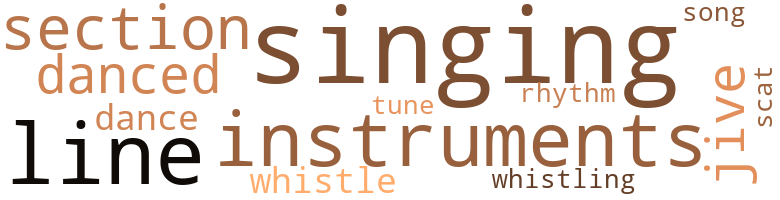
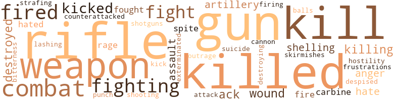
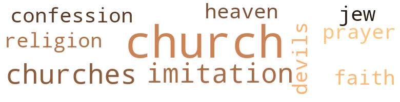

Cover My Rear, by Leonard, Mack (1974)
36 music-related terms matched in this text.
Most frequent terms in this topic: singing (8); section (4); instruments (4); jive (3); line (3)
dance.n.01
Definition: an artistic form of nonverbal communication
| word | sentence |
|---|---|
| dance | I his time Bert picked up Lundy 's dance , just as he had seen Pickles do . |
| dance | Yes , sir , Sergeant , " Rau said , clicking his heels as if he was going to do a little dance . |
dance.v.03
Definition: skip, leap, or move up and down or sideways
| word | sentence |
|---|---|
| danced | His wide marble-brown eyes still danced as they followed the edge of the road and the huddle of men who were standing there shoulder to shoulder . |
| danced | He prayed a little , screamed a little , then danced around in a semi circle before his gravel voice began simmering down into a lower whisper . |
| danced | Then he took a few steps toward Lundy , who had danced further away from him . |
jive.v.01
Definition: dance to jive music; dance the jive
| word | sentence |
|---|---|
| jive | " If I ca n't jive . |
| jive | I can jive a hunkie into doing most anything I want , hut if I ca n't jive a German hunkie into surrendering , I 'll take this part right here and beat his damn brains out . " |
| jive | I can jive a hunkie into doing most anything I want , hut if I ca n't jive a German hunkie into surrendering , I 'll take this part right here and beat his damn brains out . " |
musical_instrument.n.01
Definition: any of various devices or contrivances that can be used to produce musical tones or sounds
| word | sentence |
|---|---|
| instruments | " Apparently I forgot to tell you , Sergeant , that that firing mission on the hill was assigned to us by the Army , but our instruments would n't pick it up . |
| instruments | Farny would check the open field for a good gun position and Marsh would take a couple of men and check the house first , then check the area for tank positions , while Harwood and one other man were outlining fire directions with his compass instruments . |
| instruments | " Here , take these , " Harwood said , handing his binoculars and survey instruments to Farny and Pickles . |
| instruments | He checked all the ammo , instruments , and other equipment throughly . |
rhythm.n.04
Definition: the arrangement of spoken words alternating stressed and unstressed elements
| word | sentence |
|---|---|
| rhythm | The rhythm of the machine guns went off in sporadic bursts . |
scat.n.01
Definition: singing jazz; the singer substitutes nonsense syllables for the words of the song and tries to sound like a musical instrument
| word | sentence |
|---|---|
| scat | Everybody laughed except the little man pushed down between the two soldiers in the back scat of the jeep - the one who at first had been taken to be a French patriot . |
section.n.01
Definition: a self-contained part of a larger composition (written or musical)
| word | sentence |
|---|---|
| section | Their eyes moved in a cross section . |
| section | The regular reconn section was all loaded up on one truck and waiting at the head of the column . |
| section | After the reconn section had pulled out , it was merely a question of waiting for a few minutes before the final order would come . |
| section | It gave them something to talk about until Earl Martin , the most religious man in the section , walked forward to the front of the ship and begun singing . |
sing.v.02
Definition: produce tones with the voice
| word | sentence |
|---|---|
| singing | Near the edge , a small group of men were singing beautifully , their hollow voices blending in perfectly beneath the cover of the trees . |
singing.n.01
Definition: the act of singing vocal music
| word | sentence |
|---|---|
| singing | Occasionally they heard the sharp cracks of sniper 's bullet go singing past them , coming from the village or in the direction of the orchard . |
| singing | The bullet ricocheted off the ground and went singing past his ear . |
| singing | Rau closed his eyes , humming what he thought they were singing , but he soon discovered that it was not what he thought they were singing . |
| singing | Rau closed his eyes , humming what he thought they were singing , but he soon discovered that it was not what he thought they were singing . |
| singing | It gave them something to talk about until Earl Martin , the most religious man in the section , walked forward to the front of the ship and begun singing . |
| singing | Every man stopped singing and stood rigid . |
| singing | Slowly he turned and waved at the birds , wishing that he could understand what they were singing . |
song.n.01
Definition: a short musical composition with words
| word | sentence |
|---|---|
| song | All of his dreams were mostly about wine , women and song . |
tune.n.01
Definition: a succession of notes forming a distinctive sequence
| word | sentence |
|---|---|
| line | " This looks like it , " Harwood told Farny , who , like the others , had let his attention stray to the heavy shelling and high bursts of smoke between them and the main line of resistance . |
| line | But luckily for them in the third , they had been placed alphabetically in line , to follow the first and second battalions into a wild attack . |
| line | It needs to be right here , right where it is , keeping most of you dumb-ass niggers in line . " |
| lines | The plane accelerated its speed and continued its flight in the direction of its own lines . |
| lines | Small clouds formed long lines that looked like vapor trails , covering the entire area of sunset . |
| tune | He stopped , then opened his eyes again and tried to catch up with the same tune . |
whistle.v.01
Definition: make whistling sounds
| word | sentence |
|---|---|
| whistle | Bert gave a low whistle , then puckered his nose , indicating that he smelled something else beside the salad smell from the green grass or the fresh pink blossoms on the hedgerow bushes . |
| whistle | The guys still whistle at her when she walks down the street . |
| whistling | " On the way , " a voice came whistling back through the receiver . |
258 violence-related terms matched in this text.
Most frequent terms in this topic: killed (29); rifle (29); kill (24); gun (20); combat (18)
anger.n.01
Definition: a strong emotion; a feeling that is oriented toward some real or supposed grievance
| word | sentence |
|---|---|
| anger | Outlaw 's voice rose with childish anger . |
| anger | Since McCoy could have destroyed it before they landed , his anger subsided . |
| anger | A haggard look of anger covered Rau 's face . |
antiaircraft.n.01
Definition: artillery designed to shoot upward at airplanes
| word | sentence |
|---|---|
| ack-ack | " Sir , " Pickles said , " when me and Bert heard the ack-ack we ran to the dour to see what was happening . |
| ack-ack | Another heavy blast was heard sending a huge orange flame high into the sky , just before another wave of heavy bombers flew in , dropping more tons of heavy T.N.T. , until all the guns and resistance of what was left in that sector of enemy ack-ack batteries were silenced everywhere . |
attack.v.02
Definition: attack in speech or writing
| word | sentence |
|---|---|
| attack | " We are going to attack that village before the krauts know we are going to hit 'em . " |
blast.v.03
Definition: use explosives on
| word | sentence |
|---|---|
| shelling | " This looks like it , " Harwood told Farny , who , like the others , had let his attention stray to the heavy shelling and high bursts of smoke between them and the main line of resistance . |
| shelling | Most of the shelling that had hit their position had landed on top of McCoy 's squad . |
| shelling | But now the men were sensitized and had accustomed themselves to the shelling at the beach , just a few miles away . |
brush.n.06
Definition: a minor short-term fight
| word | sentence |
|---|---|
| skirmishes | They had fought Rommel before in Africa , and at least half of his men had been in two or more skirmishes somewhere else in Africa , too . |
cannon.n.04
Definition: heavy automatic gun fired from an airplane
| word | sentence |
|---|---|
| cannon | " I 'd say he 's nothing but cannon ( odder if you ask me . " |
carbine.n.01
Definition: light automatic rifle
| word | sentence |
|---|---|
| carbine | Farny pointed up the hill and squeezed the trigger on his carbine . |
| carbine | From behind Farny , Lundy took careful aim and squeezed the trigger on his carbine until he heard it discharge . |
contemn.v.01
Definition: look down on with disdain
| word | sentence |
|---|---|
| despised | In fact , he despised it . |
counterattack.v.01
Definition: make a counterattack
| word | sentence |
|---|---|
| counterattacked | The Air Force and American artillery quickly counterattacked the Germans ' positions from other parts of the front , which forced them to withdraw momentarily to newer positions , hut keeping all the roads and villages zeroed in . |
destroy.v.04
Definition: put (an animal) to death
| word | sentence |
|---|---|
| destroyed | The original postmarks were almost destroyed and the written words " Not Here " were scribbled many times on both sides . |
| destroyed | Since McCoy could have destroyed it before they landed , his anger subsided . |
| destroyed | Our F.O. reports that those three rounds destroyed it , along with a church behind that hill and everything else around it . |
| destroying | Like the rest , he was lying flat on his face when the bomb struck the house , totally destroying it . |
| destroyed | It was falling in a neutral zone that had already been destroyed and , since most of it had fallen in related isolated areas , the men in the platoon moved quickly from one place to another . |
exterminate.v.01
Definition: kill en masse; kill on a large scale; kill many
| word | sentence |
|---|---|
| exterminated | Hitler had promised the German people that all minority races would be enslaved forever or be exterminated from the face of the earth . |
fight.n.02
Definition: the act of fighting; any contest or struggle
| word | sentence |
|---|---|
| Fighting | Fighting is a twenty-four-hour-a day job . |
| combat | Then the two of them knelt and checked on the only combat they had between them . |
| combat | Already they were acting as if they had been in combat for a long time . |
| combat | They checked the small area combat map again and again before they were able to find their position on the ground , after using the tall steeple on the church in the village where a new battle had just begun . |
| combat | Occasionally he thought he heard what sounded like footsteps that blended in with the sounds of combat . |
| combat | He knew his brigade was well-seasoned and equally disciplined for combat . |
| fighting | " There is much fighting yet to be done . |
| combat | " Right now you are the only general in combat and the decisions are yours . " |
| fighting | The fighting in this part of the line had ceased again , and it was cool and quiet . |
| combat | And you , Bert - you are the first one to disobey me since we 've been in combat , " he argued . |
| combat | He would have to take him and set an example for the good of the crew , but right now he could n't think of a suitable punishment he could give a man in combat . |
| combat | Only a slow breeze ruffled the leaves among the trees now and then , making it easy for them to hear any kind of noise actually related to combat . |
| combat | " That 'll be your first combat assignment . |
| combat | He pitied himself and all the other men in combat like him . |
| combat | Most of them held their weapons the same way and extremely too close to their bodies for any kind of combat , especially when they were taking the chance of running into an ambush . |
| combat | Actually , none of them were ready for combat , including himself . |
| combat | It was the first time he had spoken with any kind of authority since they had entered combat . |
| fighting | I have a feeling we are going to get all the fighting we want before this goddamn war is over . " |
| fighting | It was about the only fighting left . |
| combat | He needed more combat discipline , but if he had n't learned before he got there , he never would . |
| combat | He could see himself in the thick of combat without his rifle . |
| combat | " Stick close to me , Bert , " Pickles said , as the two of them knelt side by side in the tall grass , where they waited until Farny and the two lieutenants checked the small combat map and the other terrain . |
| combat | The major checked his combat watch many times , but this time it read 0749 , the time he 'd been ordered to have his battalion ready and waiting for final instructions to start the attack . |
fight.v.02
Definition: fight against or resist strongly
| word | sentence |
|---|---|
| fight | He is a Jew and he had better reasons to fight this war than any of us . |
| fighting | He knew when it came to putting men into fighting positions , he could leave that part up to Farny . |
| fight | " That 's what the Army gave us to fight a goddam war with , so you might as well get used to it now . |
| fought | They had fought Rommel before in Africa , and at least half of his men had been in two or more skirmishes somewhere else in Africa , too . |
| fight | It was only the reservists who got hit the hardest , leaving a small number of them able and fit to fight . |
| fight | He had traveled thousands of miles to defend the greatest institution in the whole world , and this was to fight his worst enemy without creating an inferior feeling among his own men . |
| fight | The three left standing did n't quite know whether to fight or surrender . |
| fight | After the planes had gone there were n't any enemy tanks , guns , or field artillery pieces left that they could fight . |
| fighting | He was more hostile about the whole affair than Lundy , and for a moment he had forgotten all about the real issues of freedom , survival , or any of the other reasons they were fighting in part of a global war . |
| fighting | There was definitely heavy fighting to be expected . |
| fought | Even Marsh could n't feel half as proud of his own background as could Harwood , whose father and grandfather had fought in the Indian and the Spanish-American wars . |
| fight | She could n't fight this war if she was alive . " |
| fighting | Since they would be fighting in small groups , he thought it would be necessary to build up a reasonable amount of enthusiasm among them . |
| fight | We are going over there to fight . " |
| fighting | " You call yourself a fighting man . |
| fighting | And here you do n't have a fighting helmet . " |
| fight | He believed that they were placed there and forced to fight against their wishes . |
frustration.n.03
Definition: a feeling of annoyance at being hindered or criticized
| word | sentence |
|---|---|
| frustrations | Their frustrations and desires had engulfed them , forcing them to believe that they were the masters and the new leaders of all the rest of the people in the whole wide world . |
fury.n.01
Definition: a feeling of intense anger
| word | sentence |
|---|---|
| rage | Quickly a fire was in full rage . |
| rage | He wondered how he could lead a man like him , who at times would cause him to bum in the impotence of his own rage . |
gun.n.01
Definition: a weapon that discharges a missile at high velocity (especially from a metal tube or barrel)
| word | sentence |
|---|---|
| gun | He wondered if on top of each of those high cliffs there were more machine gun nests like the one they had left down by the beach , or field artillery observation points just waiting up there to knock them off . |
| guns | The rhythm of the machine guns went off in sporadic bursts . |
| gun | With another good tank and another machine gun crew like Floyd 's crew , they would have a better view , to sweep the road and half of the field at least a hundred yards out in front of them . |
| guns | The tempo of the machine guns went off in quick short bursts . |
| gun | Farny absently took a cigarette from his fresh pack and started to light it when he noticed a screen of yellow dust trailing a jeep , as it made screeching turns on the narrow shoulders of the road , leading straight through one of their anti-tank gun positions . |
| guns | Farny checked and found Pickles , whose turn it was to stand guard , had tried to sleep , but the noise of the machine guns and the movements of tanks in the darkness behind enemy lines had kept them awake . |
| gun | Farny let go a quick burst from his Thompson machine gun . |
| guns | After the planes had gone there were n't any enemy tanks , guns , or field artillery pieces left that they could fight . |
| gun | Another round was loaded and the lanyard snapped , and the second round shot out of the gun at the same elevation and at the same range . |
| gun | The front was almost quiet again except for a few machine gun bursts here and there , breaking the silence just enough to notice it . |
| guns | He knew that Farny would find out anyway so he handed him both canteens , as if he was giving him two guns . |
| gun | Then he thought again ; it was Farny who took his gun under orders . |
| gun | Farny would check the open field for a good gun position and Marsh would take a couple of men and check the house first , then check the area for tank positions , while Harwood and one other man were outlining fire directions with his compass instruments . |
| gun | The field was fine for both gun and tank positions . |
| guns | There was also a good growth of natural protection in the next field , from which only the muzzle blasts from the tank and guns would be exposed . |
| gun | As soon as it crossed the beach and headed inland a few hundred yards , a barrage of machine gun and " ack-ack " fire rose up to meet it . |
| gun | " That gun is mine . " |
| gun | Rau , with Floyd on the machine gun behind him , ordered his jeep driver to pull out at a faster speed than the rest . |
| guns | Another heavy blast was heard sending a huge orange flame high into the sky , just before another wave of heavy bombers flew in , dropping more tons of heavy T.N.T. , until all the guns and resistance of what was left in that sector of enemy ack-ack batteries were silenced everywhere . |
| guns | The artillery came first , then the machine guns , with all sizes of mortar shells being lobbed in between . |
| gun | Just then Farny came down from the captain 's deck and walked along the narrow - catwalk between the gun and the steel wall . |
| gun | He looked up at the tarp on top of the tank where Floyd was perched behind the fifty-caliber machine gun , his green raincoat flung around his narrow shoulders . |
| guns | Soon they were close enough to see the muzzle blasts from the guns on the beach , firing almost point blank at the big ships in the center of the convoy . |
| gun | They were bombing and strafing the entrenched gun positions along the beach . |
| gun | By now the plane was well out of range of the ship 's gun . |
| guns | Their only flutter came from the sounds of distant guns , which sometimes echoed like autumn thunder from other planes along the front . |
| gun | At the top of the cliff the entrenched machine gun stopped Firing for a brief moment . |
| guns | Everything was quiet in their direction except for the guns on the ships , firing over their heads into the area ahead of them . |
| guns | The guns from the ships seemed to be reaching most of their targets with assured accuracy . |
| gun | " I am going to work my way around that machine gun nest up there , Lundy . |
| gun | He was afraid to take his eyes away from the machine gun equipment or to look back for his men , even though he wras sure that the lone German had not seen him trying to sneak up on him from the rear . |
| gun | Again the machine gun opened up , but now it was too late . |
hate.v.01
Definition: dislike intensely; feel antipathy or aversion towards
| word | sentence |
|---|---|
| hate | It was the same pride that had made him hate all of them back at the beach . |
| hated | He hated him and his symbol of leadership , invested with authority and power . |
| hate | Slowly he began to hate all of them for having fallen below his own expectations , after he had humbled himself toward them , but because of the faith he had in humanity , he decided he would stick it out . |
| hated | He hated Marsh for a moment . |
| hate | But he found it painful to hate him for long . |
hostility.n.01
Definition: a hostile (very unfriendly) disposition
| word | sentence |
|---|---|
| hostility | Somehow this was n't quite what he had expected to see in them so soon , but it seemed that they had welcomed their first opportunity to release their hostility - with ease , not vengeance ; with courage and not fear . |
indignation.n.01
Definition: a feeling of righteous anger
| word | sentence |
|---|---|
| outrage | Pickles met Farny at the bottom of the stairs in the same outrage he 'd encountered with Bert , except that this time he had crouched himself in readiness , waiting for Farny to attack him first . |
kick_back.v.02
Definition: spring back, as from a forceful thrust
| word | sentence |
|---|---|
| kicked | Angrily he kicked the camouflage foilage away from the head of the German , knocking his helmet off . |
| kicked | Quietly he tiptoed up behind Pickles , stopped , and kicked him on the bottom of his foot . |
| kicked | My dad was so angry he cursed and kicked old Jack something awful . |
| kicked | In spite of his trying to keep still , the stubby toe of his combat boot kicked deep holes in the soft dirt of the foxhole . |
| kicked | He kicked the large part of the tarp on the tank with the toe of his shoe , shouting , " Give them Germans some more hell for me ! " |
| kick | It 's time to get up and kick the hell out of those goddamn Germans . " |
| kicked | From the other side of the hill he could see Marsh and three of his men coming around to meet him , hut he reached the pit first and kicked the foliage away from the hole ; then he held his breath and tried to swallow . |
kill.v.10
Definition: cause the death of, without intention
| word | sentence |
|---|---|
| killed | " Naw , " Farny said , " it 's no use risking your life to get us both killed when we do n't have to . |
| kill | Do n't kill him , " Marsh begged . |
| killing | There has been enough killing here already . " |
| kill | They bad been trained to kill , and the enemy had been trained to kill also . |
| kill | They bad been trained to kill , and the enemy had been trained to kill also . |
| kill | The only sure way to stay alive now was to kill . |
| killed | A man like him could easily collaborate with the enemy and get all of them killed . |
| killed | The young , black , bloody hands of Bert and Lundy had just killed five men , and they were n't showing any stress or strain after their first encounter with the enemy . |
| kill | That 's why I will kill any man who ever tries to destroy any part of its reputation . " |
| kill | Now you are saying that you would kill any one of us for either one of them honkies , or maybe just for the sake of killing . " |
| kill | The driver looked around and replied , " Well , we 're going to kill this bird . " |
| kill | " Yes , let 's us kill 'em fer you , " Pickles said , reaching for the Frenchman , who had pushed the bandages from his eyes and eluded his grasp . |
| kill | Then without thinking , he asked , " Let me know when you kill him . " |
| kill | " Naw , I ca n't let you kill 'em . |
| killed | " You are going to get yourself killed , and I wo n't feel a damn bit sorry for you when it happens . |
| kill | Some more of our men are over there , too , and we do n't want to kill our men . " |
| kill | Somebody over there is trying to kill us , ai n't they ? " |
| kills | " Sargc , " Lundy said , " let 's go out and get that sonofabitch before he kills some of us . |
| killed | Or what if they killed the parent and the child and let the sniper escape ? |
| killed | " You can stay here and git killed if you wan na , but I 'm getting my ass out of this damn doorway . " |
| kill | He continued to beat , curse and kick him so hard I thought he was going to kill him . |
| killed | I guess I must have killed at least twenty-five or thirty Germans out there last night . " |
| killed | The letter would read that one of Rau 's men had killed twenty-five enemy soldiers trying to make a sneak attack , advancing on Company C under the shadows of darkness . |
| killed | Each of them stood silently waiting for Pickles to point to the area where he said he had killed at least twenty-five enemy soldiers or more . |
| killed | Instead , we find that all you have killed is just a stubborn old jackass . " |
| killed | Most of them were killed , " Rau nodded approvingly . |
| kill | When Ah kill , Ah kill real people . |
| kill | And befo ' Ah git out of dis here Army Ah s ' pect Ah 's gon na kill me jes ' one little agitating black nigger . " |
| killed | " ' Several other couples came in and we all killed two cases of beer . |
| killed | Out here you either kill or be killed . " |
| killed | His last word - " killed " - seemed to hang for a spell . |
| kills | " Take that man 's rifle , Sergeant , before it goes off and kills somebody . " |
| killed | The enemy would be firing from both sides and he would be the only man killed . |
| killed | McCoy 's ability to get things done had earned him top honors as the man most likely to succeed him if he got himself killed . |
| killed | " Get away from there , Lieutenant , before you get killed ! " |
| killed | Either one of them could have been killed just as easily , although he felt that if he had been there , he might have sensed the danger in time . |
| killed | The whole situation was strange : one plane , one bomb , and one man killed . |
| killed | " What are you trying to do , get yourself and all your men killed ? |
| kill | She 'd turn over in her grave if she knew I was taking a bunch of black savage bastards somewhere to kill a white man . " |
| kill | I 'm taking you and every black man you see out there to kill whoever the enemy is . |
| killed | I did n't Say who 'd killed our officers . |
| killed | I just said that they were killed , and I felt it was my duty to keep you informed about any detail our intelligence group found out up front , no matter how small . " |
| killed | I also heard they killed a lot of mulattos because they thought they were white . |
| killed | And why would Farny send him out on reconn at such an early stage of the game when there were half-a-dozen other men he could have picked to get killed first . |
| kill | One day they were gon na up and kill her boy if they kept slapping him as hard as that . |
| kill | I do n't want to kill you . |
| kill | But I will kill anybody who tries to make me leave this ship . " |
| killed | " I ai n't going up there and git myself killed . |
| killed | Ya 'll is going to git killed 'cause you do n't know any better . |
| killed | I know I ai n't going to leave this ship , and I know I ai n't going out there and git myself killed just to prove to these white hunkies that I 'm just another one of their good niggers . |
| kill | I know if I have to leave this ship , it will just be long enough to kill your black ass . " |
| kill | Right now he wished he could kill Pickles without saying another word . |
| killing | From the top of the hill a hail of machine-gun fire sailed over their heads , spraying the jeep , killing the driver instantly and wounding Lloyd , who had replaced Lieutenant Marsh just for the landing . |
| killed | All of us could git killed right here on this beach because some uf them wuz somewhere reading . |
| killed | Gradually Farny found himself wanting to rush the cliff alone , since he had almost reached the focal point of explosion , until he realized that he had never killed a man . |
killing.n.02
Definition: the act of terminating a life
| word | sentence |
|---|---|
| killing | He thought of the two men he had taken credit for killing , and the argument he had had with Pickles on the ship before they landed . |
| killing | Now you are saying that you would kill any one of us for either one of them honkies , or maybe just for the sake of killing . " |
| kill | When Ah kill , Ah kill real people . |
| kill | Out here you either kill or be killed . " |
malice.n.01
Definition: feeling a need to see others suffer
| word | sentence |
|---|---|
| spite | In spite of his trying to keep still , the stubby toe of his combat boot kicked deep holes in the soft dirt of the foxhole . |
| spite | Looking a bit doubtful , Lundy kept searching himself to see if he had been burning , in spite of what they had told him before yielding to Farny 's persistent persuasion . |
musket_ball.n.01
Definition: a solid projectile that is shot by a musket
| word | sentence |
|---|---|
| balls | " Do n't let that sonofabitch catch a good hold on your balls . |
open_fire.v.01
Definition: start firing a weapon
| word | sentence |
|---|---|
| fired | Then to his amazement a rifle fired , stopping him dead in his tracks . |
| fired | Almost in quick succession another shot was fired . |
| fired | Floyd had started in motion to strike the match when the sky lit up and a bullet , fired by the sniper , went sailing over their heads , striking the wall behind them . |
| fired | My dad leveled off on the rabbit and fired once . |
| fired | This fellow took dead aim and fired . |
| fired | He pointed in the same direction in which he said he had fired his rifle . |
| fired | Suddenly a couple of shots were fired from another direction . |
| fired | No rounds had been fired from their tanks all that day , nor had there been any commands to fire from the fire direction center or headquarters . |
| fire | No rounds had been fired from their tanks all that day , nor had there been any commands to fire from the fire direction center or headquarters . |
| fired | That much Farny did not doubt , since they had not fired a single round at the Nazis , and had not started one all-out counterattack since they landed . |
| fire | " Rounds completed , " Farny called back , informing the telephone operator , who in turn relayed it to fire direction . |
| fired | " After you have fired the first round , turn to the next target and fire at your command . |
| fired | A couple of rounds were fired by both tanks before they had traveled a hundred yards . |
| fired | Another round was fired which appeared to land right in the middle of their target zone , just before they reached a little rise on the terrain they would use for cover if they needed it . |
| Firing | At the top of the cliff the entrenched machine gun stopped Firing for a brief moment . |
punch.n.01
Definition: (boxing) a blow with the fist
| word | sentence |
|---|---|
| punch | " Give them hell , you hunkies ! " he shouted , making punch gestures with his fist . |
rape.n.03
Definition: the crime of forcing a woman to submit to sexual intercourse against her will
| word | sentence |
|---|---|
| assault | Within ninety seconds of the first assault another group of bombers flew in on the same pattern . |
| assault | Harwood and Farny saluted as the first assault unit moved out to occupy the village of St. Malo . |
| assault | " Lieutenant Marsh , you take your platoon ashore in the first assault . '' |
resentment.n.01
Definition: a feeling of deep and bitter anger and ill-will
| word | sentence |
|---|---|
| bitterness | Most of the trip was ridden in silence , except that you could feel and sense a little bitterness in most of the men . |
rifle.n.01
Definition: a shoulder firearm with a long barrel and a rifled bore
| word | sentence |
|---|---|
| rifle | Lundy , who stood beside him , held his own rifle at hip level . |
| rifle | He just stood there with his rifle at a distant port , his thumb resting tight on top of the safety latch . |
| rifles | For maximum security purposes he placed a couple of extra men just in case of a tank counterattack ; they were armed with bazookas , hand grenades , rifles and mines . |
| rifle | Lundy came without his rifle , but he did carry a hand grenade in each hand , and by the time the jeep was even with their position , the road was completely blocked with most of his tank squad . |
| rifle | He stood his ground , keeping the driver of the jeep in the sights of his rifle . |
| rifle | He looked around just in time to see Pickles bring the barrel of his rifle down on top of the Frenchman 's head , kinda sneaky-like . |
| rifle | He checked his rifle by ejecting a few rounds through the chamber . |
| rifle | His rifle was pointed out through the base of the hedges . |
| rifle | Pickles swung around , bringing his rifle straight up through the hedges , trying to point it to the rear , but Farny had timed it perfectly . |
| rifle | " I am , " Pickles answered , jerking his rifle away from Farny . |
| rifle | Keep your eyes open and do n't let Jerry come up behind you and take your rifle away from you the way I just did . " |
| rifle | " He can if he can take enough of these 30-30 rifle slugs . " |
| rifle | Then to his amazement a rifle fired , stopping him dead in his tracks . |
| rifle | He showed Farny his rifle , three hand grenades and an extra clip of ammunition . |
| rifles | I he other men gathered around him immediately , each of them checking their rifles all at the same time . |
| rifle | But without Lundy , who was an expert with a rifle , none of them wanted to make the journey to that outpost alone . |
| rifle | He pointed in the same direction in which he said he had fired his rifle . |
| rifles | This caused the butts of their rifles to make funny dull noises , which drew the attention of Farny and the other three men with him , who at that time were some distance away . |
| rifles | Lundy and Pillows squeezed the trigger on their rifles , too . |
| rifle | " Take that man 's rifle , Sergeant , before it goes off and kills somebody . " |
| rifle | " I said take his rifle . |
| rifle | Farny handed the rifle to Captain Rau . |
| rifle | " This is one reconnaissance you 're going to be on without a rifle . " |
| rifle | He could see himself in the thick of combat without his rifle . |
| rifle | Lundy grabbed his rifle and dashed off in a big hurry . |
| rifle | He felt his empty shoulders for the rifle . |
| rifle | " Now what in the hell did I do with that damn rifle ? " |
| rifle | Quickly he rushed up the side of the tank and selected his rifle from among the rest of them , then stepped down again . |
| rifle | Bert adjusted his rifle sling , turned , and ran as best he could to the steps that led down to the small power room . |
| rifle | He pointed his rifle straight at Bert 's head . |
| rifle | " Give me that damn rifle , soldier . " |
| rifle | Each of them exchanged stiff glances at each other before Farny pushed the rifle into his stomach . |
| rifle | He unconsciously snatched the rifle away from Farny and he ran to catch up with the rest of the men who were creeping along beside the tank . |
shooting.n.02
Definition: killing someone by gunfire
| word | sentence |
|---|---|
| shooting | " I 'm sick and tired of these goddamn Germans shooting and attacking at us every day , " Farny grumbled . |
shotgun.n.01
Definition: firearm that is a double-barreled smoothbore shoulder weapon for firing shot at short ranges
| word | sentence |
|---|---|
| shotguns | One of the guys is buying both of your shotguns . |
strafe.v.01
Definition: attack with machine guns or cannon fire from a low-flying plane
| word | sentence |
|---|---|
| strafing | They were bombing and strafing the entrenched gun positions along the beach . |
suicide.n.01
Definition: the act of killing yourself
| word | sentence |
|---|---|
| suicide | In detail they had been told about enemy suicide squads everywhere in the sector . |
weapon.n.01
Definition: any instrument or instrumentality used in fighting or hunting
| word | sentence |
|---|---|
| weapons | Farny and Lundy raised their weapons again . |
| weapons | Lundy carefully slid down in the hole beside the wounded German officer first , lie immediately began , by searching him lor his weapons and then for his wounds . |
| weapons | They all seemed to have the same weapons except Farny . |
| weapon | From where Farny was standing , his weapon did not show , either , but he held it in readiness just in case . |
| weapons | These were the weapons he had counted on to drive the Germans back or start a new attack when ordered to do so . |
| weapon | Farny stood up and checked his weapon , then bent over in c crouch and started out the door . |
| weapon | Those rounds are coming from a German weapon , and that 's a German sniper ; listen . " |
| weapon | Bert came over and kneeled down beside him , pointing his weapon in the direction of the building they were watching . |
| weapons | Most of them held their weapons the same way and extremely too close to their bodies for any kind of combat , especially when they were taking the chance of running into an ambush . |
| weapons | Tell your men to drop their weapons , Lieutenant . " |
| weapons | He said something in his own language to his men , who had their weapons ready and pointed straight at Marsh 's head and the men standing beside him . |
| weapons | " Tell your men to drop their weapons , Lieutenant , and no one will get hurt . " |
| weapons | Marsh glanced around and saw that only one or two of his own men had their weapons pointed in the right direction , ready to fire . |
| weapons | After they had gotten over the quick shock Marsh and his men , who had hit the ground for cover , moved in and took the weapons from the Germans ' hands , which they still held high in the air . |
| weapons | Paying a high cost in men , equipment , and weapons , they pushed in every way until some part of their drive was halted by parts of the 16th Division , before they reached any part of the village . |
| weapon | Beside him another soldier with one leg missing was still firing his weapon , unaware that he had lost a leg . |
| weapon | He was a free man and every free man should have his weapon . |
| weapon | Farny had told him that if he found Marsh 's body first , he could have his weapon . |
| weapons | Most of them were sitting under their green steel helmets , their heads bowed low , clutching their weapons between their legs . |
| weapon | He accepted the fact that a man 's life was n't worth a damn thing , not even the price of the weapon he carried along with him to protect it . |
| weapon | The German sniper slumped over on one side , his fingers still clutched tight around the trigger of his weapon , sending tracer bullets digging into the sand beneath the hill . |
weapon.n.02
Definition: a means of persuading or arguing
| word | sentence |
|---|---|
| artillery | " General , let me bring in my unit and attack the Germans on the left flank with my tanks and artillery . " |
| artillery | It was for the tanks and artillery , but Farny and his men knew it was for them also . |
| artillery | He could see all of them dying there together or being pushed back to the beach to die in a sandy grave , dug by the continuous bombardment of German artillery . |
whip.v.04
Definition: strike as if by whipping
| word | sentence |
|---|---|
| lashing | Their bright colors were fading near their bases , displaying the ugly scars of the lashing and splashing of the high tides rolling in from the sea . |
wound.n.01
Definition: an injury to living tissue (especially an injury involving a cut or break in the skin)
| word | sentence |
|---|---|
| wounds | Lundy carefully slid down in the hole beside the wounded German officer first , lie immediately began , by searching him lor his weapons and then for his wounds . |
| wounds | " Never mind the wounds , " Bert said . |
| wounds | Once on top , Marsh and Farny examined him thoroughly for additional wounds . |
| wound | At about that time a little green snake crawled through the grass in another direction and wound himself around a tall weed . |
20 religion-related terms matched in this text.
Most frequent terms in this topic: church (9); imitation (2); churches (2); prayer (1); religion (1)
church.n.02
Definition: a place for public (especially Christian) worship
| word | sentence |
|---|---|
| church | They checked the small area combat map again and again before they were able to find their position on the ground , after using the tall steeple on the church in the village where a new battle had just begun . |
| church | He wanted the church searched , too . |
| church | " I know because we saw a lot of people going to church and that was at least three days ago . " |
| church | " Catholic people sometimes go to church every day . |
| church | Our F.O. reports that those three rounds destroyed it , along with a church behind that hill and everything else around it . |
| church | With those three rounds our tankers just destroyed a church , a radio tower , some tanks and ammo and most of the enemy attackers . " |
| church | It 's one thing Ah always say - one thing you should never shoot at is a church . |
| church | My uncle is in jail now , all 'cause he lost his head and shot at one of the deacons who ran the church . |
church.n.04
Definition: the body of people who attend or belong to a particular local church
| word | sentence |
|---|---|
| church | " A church ? " |
| churches | They know how we feel about men , women , children , religion and even churches . " |
| churches | " War or no war , Ah do n't like shootin ' at churches , sir . |
confession.n.05
Definition: the document that spells out the belief system of a given church (especially the Reformation churches of the 16th century)
| word | sentence |
|---|---|
| confession | She said she was going to confession or some kind of stuff like that , " he laughed . |
eden.n.01
Definition: any place of complete bliss and delight and peace
| word | sentence |
|---|---|
| heaven | " And for heaven 's sakes , he careful this time . " |
imitation.n.01
Definition: the doctrine that representations of nature or human behavior should be accurate imitations
| word | sentence |
|---|---|
| imitation | You should have seen Kay do an imitation of Gypsie Rose Lee . |
| imitation | Pickles laughed loudly ; then he began doing a good imitation of an Indian war dance which made everybody laugh , including Farny . |
jew.n.01
Definition: a person belonging to the worldwide group claiming descent from Jacob (or converted to it) and connected by cultural or religious ties
| word | sentence |
|---|---|
| Jew | He is a Jew and he had better reasons to fight this war than any of us . |
prayer.n.01
Definition: the act of communicating with a deity (especially as a petition or in adoration or contrition or thanksgiving)
| word | sentence |
|---|---|
| prayer | In a quick moment of meditation Farny dropped his head and remained motionless as he said a silent prayer . |
religion.n.01
Definition: a strong belief in a supernatural power or powers that control human destiny
| word | sentence |
|---|---|
| religion | They know how we feel about men , women , children , religion and even churches . " |
| faith | Slowly he began to hate all of them for having fallen below his own expectations , after he had humbled himself toward them , but because of the faith he had in humanity , he decided he would stick it out . |
satan.n.01
Definition: (Judeo-Christian and Islamic religions) chief spirit of evil and adversary of God; tempter of mankind; master of Hell
| word | sentence |
|---|---|
| devils | " There are just seven of them poor devils left . " |